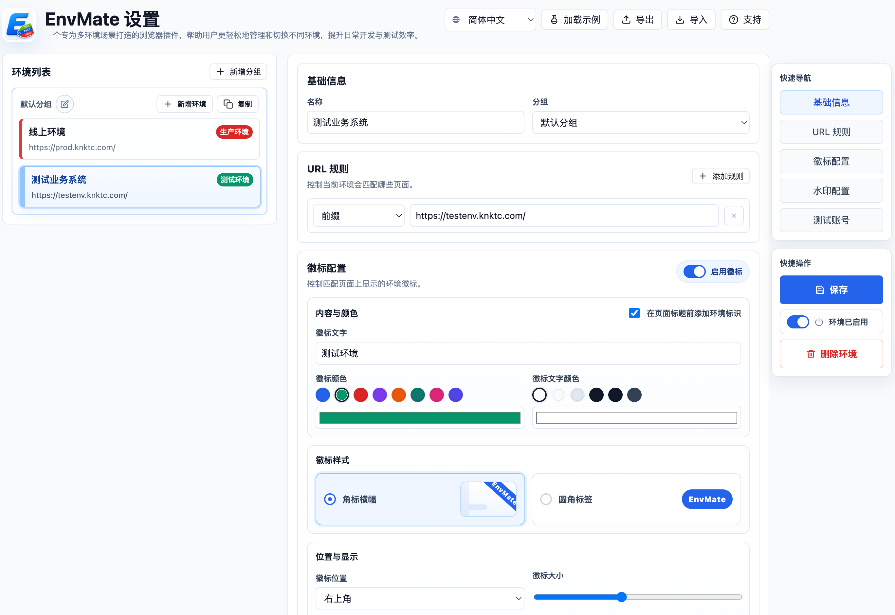

A Chrome extension I built with Codex has finally made it to release, and it is called EnvMate.
If you want to install it right away, you can search for EnvMate in the Chrome Web Store, or just open this link directly:
https://chromewebstore.google.com/detail/envmate/mccdmjfnlkkjmcioapnehkmpgkblhiei
At its core, it is a Chrome extension for multi-environment workflows. It solves a very specific but very familiar problem: a lot of development, testing, staging, and production systems look almost identical, and when you switch between them all day, it becomes far too easy to click in the wrong place.
So this time I wanted to see whether I could solve two things in a lightweight way: making the current environment obvious at a glance, and making test-account login a lot less annoying.
Here is the main configuration screen first:

Why I wanted to build this
Over the years, I have felt more and more that plenty of online mistakes do not come from complicated technical issues. They often come from something much simpler, like looking at the wrong environment.
The same system may exist in several versions, and the page structure, menus, and buttons all look almost the same. You think you are clicking around in a test environment, but the page in front of you is actually production. Or you are only trying to verify something quickly, and the action ends up landing somewhere it absolutely should not.
It is not a complicated problem in theory, but if you switch between multiple environments regularly, you know how annoying it can be.
Another practical issue is that some internal test systems around me have gradually been moving to HTTPS, but with self-signed certificates. Once that happens, Chrome’s built-in saved credentials and autofill do not always feel as smooth or reliable as before. You end up hunting for test accounts, retyping credentials, and constantly breaking your own flow.
So what I wanted in the end was not some heavy “environment management platform.” I wanted a lightweight browser extension that opens fast and solves the real daily pain points:
- Let me see immediately which environment I am in.
- Let me fill the right test account quickly when I need to log in.
That is the direction EnvMate came from.
What EnvMate can do right now
The extension is not trying to do anything overly grand. Most of what it does is focused on two things: reducing mistakes and making environment switching smoother.
1. Identify the current environment with URL rules
You can define matching rules for different environments, such as wildcard rules, prefix rules, or regular expressions. Once the current page URL matches one of those rules, the extension can identify which environment the page belongs to.
The nice part is that this does not depend on changing the page itself, and it does not require the system to expose some special built-in environment marker. In a lot of cases, if the domain or path follows a pattern, that is already enough.

2. Mark the environment in a way you are unlikely to miss
Once the environment is recognized, the next step is making sure you do not overlook it.
Right now EnvMate supports a few very direct visual cues:
- page corner badges
- page watermarks
- page title prefixes
- combinations of corner badges and watermarks
The point of these features is not to look fancy. The point is to be obvious.
For example, production can keep a high-contrast badge visible at all times, while a test environment can use a softer watermark across the page. Even if the UI itself looks nearly identical, you can still tell where you are the moment you switch back to the tab or refocus the window.


3. Keep test accounts tied to each environment
Recognizing the environment is only half of it. A lot of the time, you also need to get into it quickly.
So the extension also lets you maintain test accounts for each environment. Once you are on a matching page, you can choose the relevant account directly from the extension instead of digging through docs, chat history, or a password manager.
This is especially handy for internal systems using self-signed HTTPS, where the browser’s built-in autofill is not always the smoothest option. Keeping the accounts close to the environment itself turns out to fit day-to-day testing much better.
It is also worth saying clearly: the extension only fills information when you trigger it yourself. It does not auto-submit forms.


4. Organize many environments with groups
If you are not dealing with just one system, or if a single product line already has dev, test, staging, and production environments stacked together, the configuration can become messy very quickly.
So I also added grouping. You can organize environments by product, project, or business line, which makes the setup much easier to maintain as it grows.
Who this extension is for
If your daily work looks anything like this, EnvMate will probably feel useful:
- you switch between development, testing, staging, and production a lot
- several systems look too similar and are easy to mix up
- you log in with different test accounts frequently
- internal systems are moving to self-signed
HTTPS, and built-in browser autofill no longer feels reliable enough
It is not solving a huge abstract problem. It is solving a very specific, very frequent, and very real one.
Using Codex for this was also a fun experience
Strictly speaking, this was a pretty typical vibe-coding project.
I did not start by fully specifying every detail and then implementing it step by step. Instead, I locked onto the core goal first, then had Codex follow along while I kept refining the interactions, behavior, and small details.
That rhythm feels quite different from the traditional “write the full spec first, then execute the plan” approach. It is closer to setting a clear direction and then pushing on every part that still feels awkward until the result starts to feel like a real tool you would actually keep using.
For this kind of personal-efficiency, utility-shaped project, I think that approach works especially well. The benefit is not only speed. It is also that you can turn a vague idea into something real, installable, and useful in the browser with relatively little friction.
Installation and source code
If you just want to install it, the Chrome Web Store is the simplest option:
If you want to look through the implementation, the source code is on GitHub:
- GitHub: https://github.com/knktc/EnvMate
I also uploaded a copy to Baidu Netdisk. If downloading the extension directly is inconvenient for you, you can use this link instead:
- Baidu Netdisk: https://pan.baidu.com/s/133Z4ofjbWXourmDe2ntzeg?pwd=fg42
If you want to install the crx manually, the process is simple:
- Open
chrome://extensions/in Chrome. - Turn on
Developer modein the top-right corner. - If your browser allows direct
crxinstallation, drag the downloaded file into the page and confirm the prompt. - If your Chrome build does not allow direct
crxinstallation, extract it first, then clickLoad unpackedand choose the extracted folder.
If you spend a lot of time jumping between environments that all look the same, or if you have been fighting awkward account autofill in self-signed HTTPS systems, this extension might save you a few mistakes.
And if I keep adding more convenient capabilities later, like smoother environment-switching helpers, more page-recognition details, or something better suited for team-shared configuration, I will keep iterating on it.